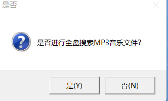
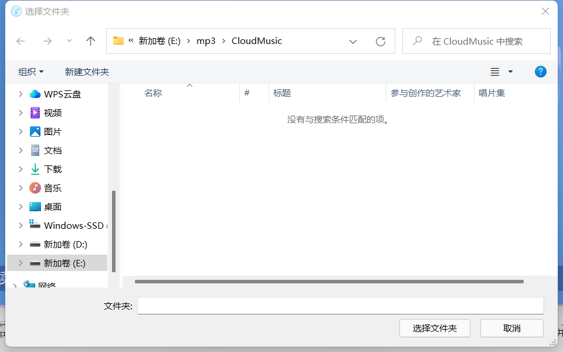
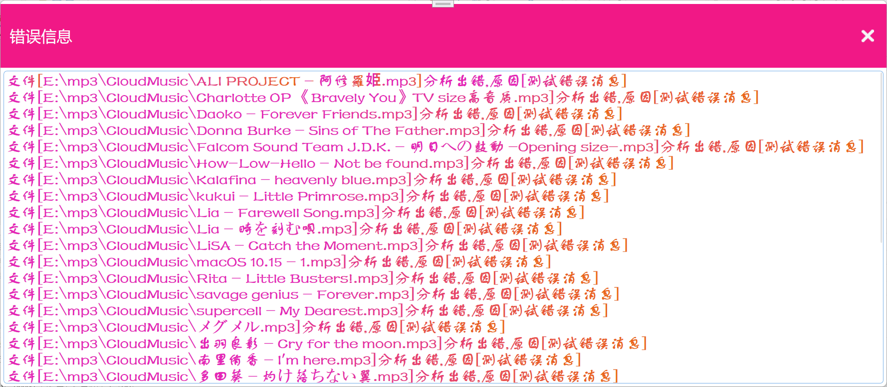
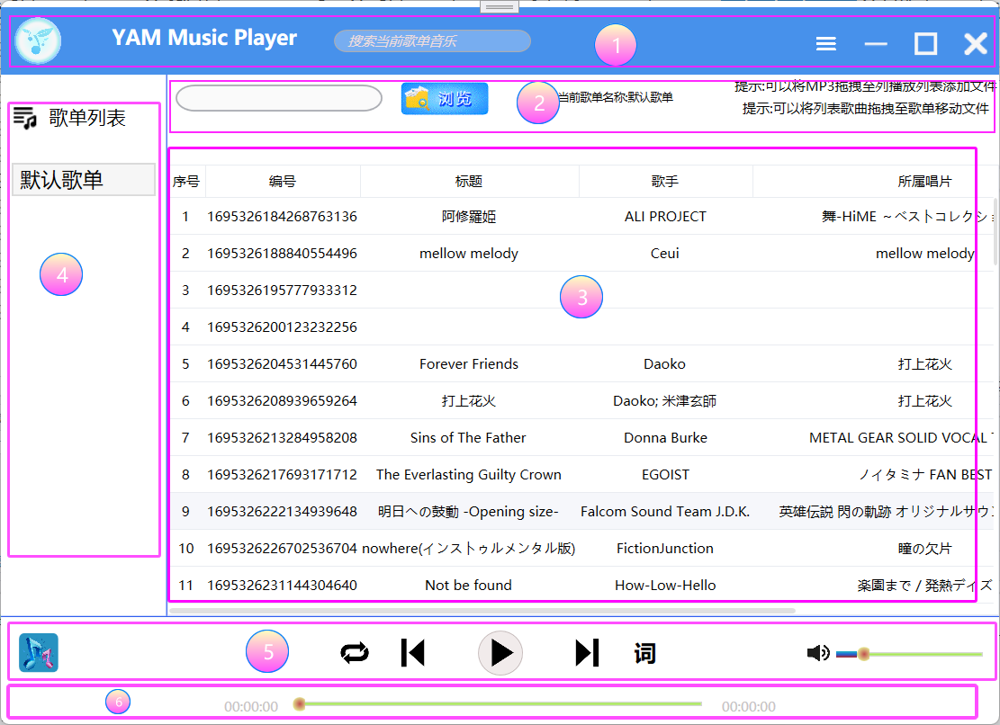
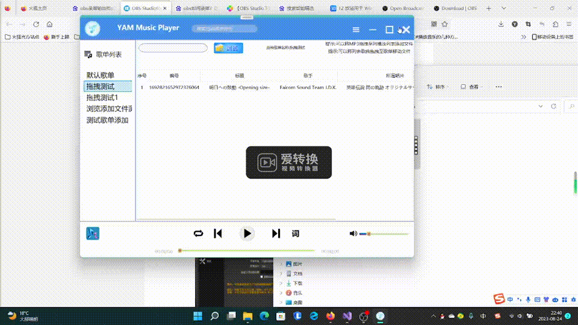

当程序启动时会弹出是否全盘搜索的对话框,选择全盘搜索之后会搜索电脑里的所有MP3文件，
注意:如果选择全盘搜索,此过程较为漫长建议选择文
件夹进行搜索

选择否会弹出文件夹选择窗口，选择存有mp3文件的文件夹然后点击确定，程序就会开始解析mp3文件

之后启动页就开始分析文件夹里找到的mp3文件
如果找到的文件中有错误文件就会弹出错误消息对话框

主界面的显示如下图

1、标题栏区域,从左到右依次为
1 程序的图标和标题
1.2 搜索当前歌单列表歌曲(输入关键字按下回车开始搜索)
1.3 主菜单按钮(点击弹出主菜单)
1.4 最小化
1.5 最大化
1.6 关闭窗口
2、提示和批量添加区域，从左到右依次为
2.1 显示批量添加的文件夹路径的文本框
2.2 浏览批要量添加的文件夹(选择后自动添加选中文件夹中的音乐到当前歌单)
2.3 当前正在播放的歌单名称
3、当前歌单的音乐列表,鼠标双击其中一项则开始播放选中的音乐,鼠标右键单击弹出的快捷菜单可以对音乐进行操作
4、歌单列表,鼠标单击右键可以对歌单进行操作
注意:默认歌单不可删除,一定要删除必须指定其他歌单为默认歌单即可删除
5、播放控制区域,从左到右依次为
5.1当前播放歌曲显示
5.2播放顺序控制按钮
5.3上一首歌曲按钮
5.4播放和暂停按钮(双击播放或暂停播放)
5.5下一首歌曲按钮
5.6歌词显示按钮,歌词格式为ylrc
歌词文件的内容如下
[00:19.64]あの日見渡した渚を
[00:24.50]今も思い出すんだ
[00:19.64]代表歌词出现的时间,格式为[分钟:秒钟.毫秒]
5.7为音量条件按钮,可以条件系统的音量
6、歌曲进度条控件，拖动控制点可以调整播放进度
可以在歌单列表单击鼠标拖拽歌曲文件到歌单列表进行移动
